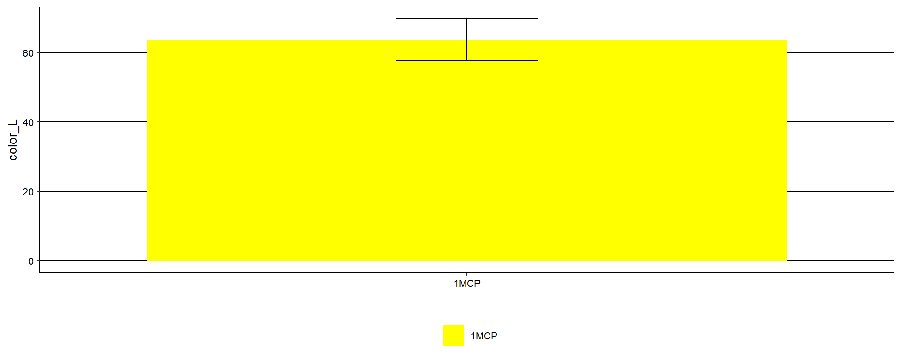
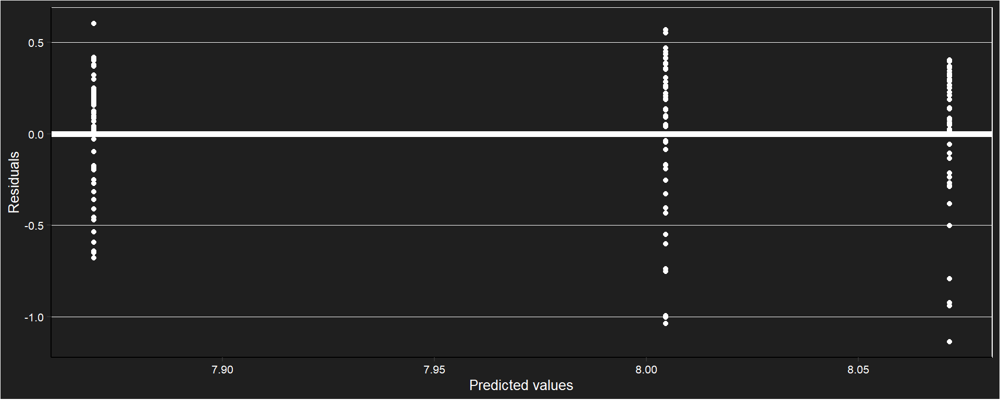
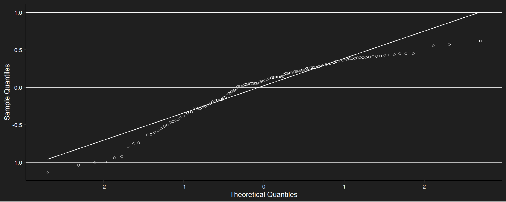
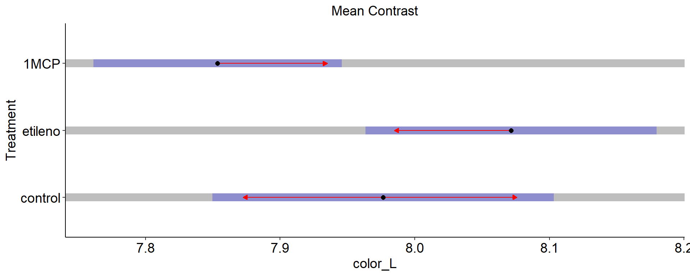
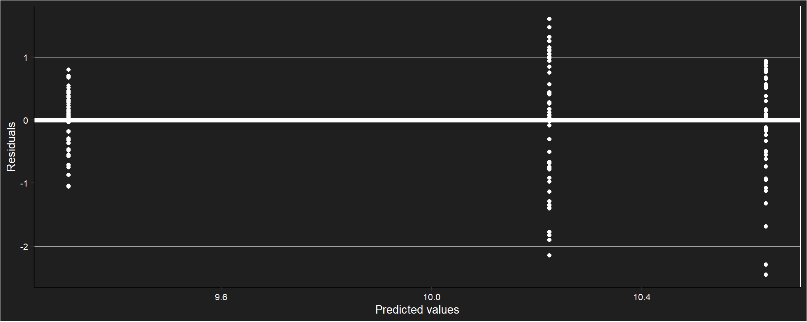
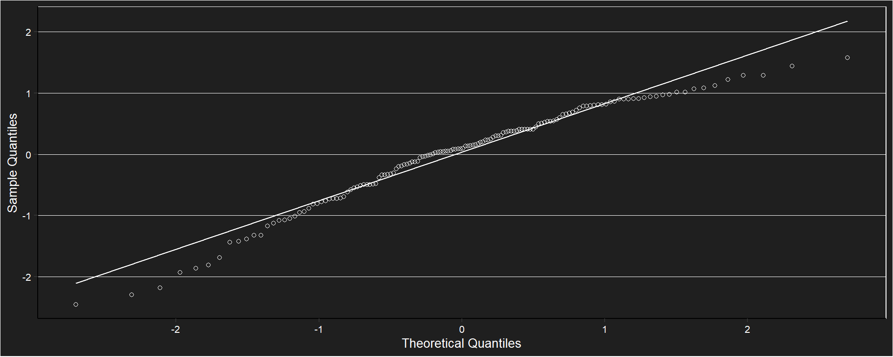
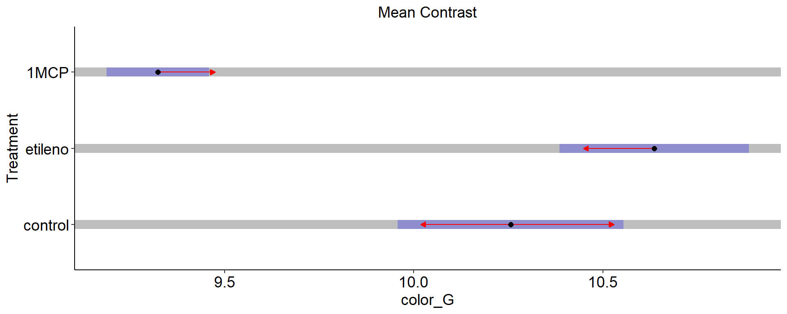
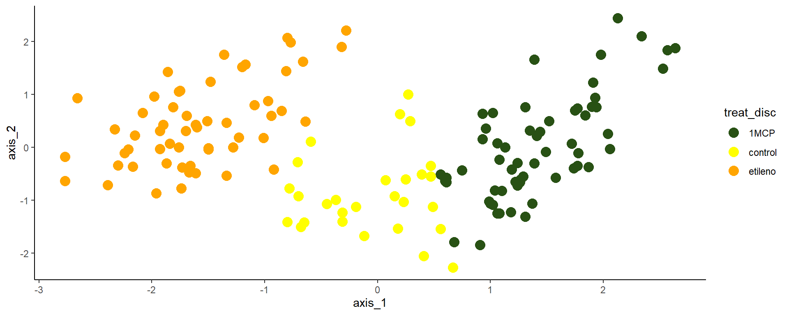
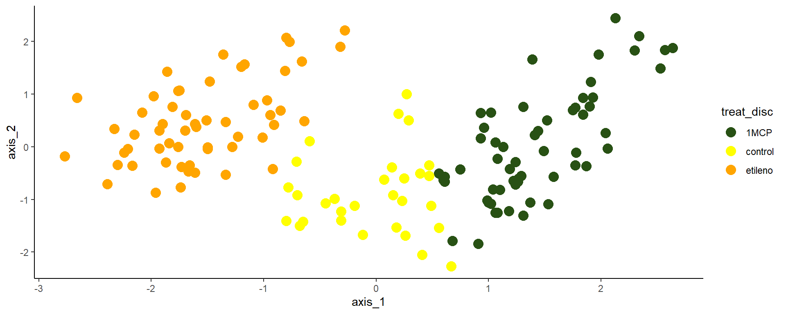

Climateric
Respiration. Essay 1 with CO2 accumulated
CO2 acumulation
Respiration. Essay 1 with ml CO2
Boxplot for CO2 emission for two stages of maturity in time.
CO2 emission for two stages of maturity in time. Shapes indicate different repetitions.
Correlation between the concentration of CO2 and O2 for mature and immature fruits.
O2 for mature and immature fruits over time.
Model
Assumptions
Assumptions are ok.
Anova
There is no interaction or significant differences.
Conclusion for respiration
There is no convincing evidence in this essay to affirm that the fruit of the ubajay is climacteric.
Análisis de con medidas repetidas en el tiempo
Respiration essay 2
No existen evidencias para rechazar la hipótesis nula.
Diferencias en porcentaje por sitio
Colorimetry
*L color
Filter data n=50
Descriptive table for fresh_weight
## # A tibble: 3 × 5
## treat mean min max sd
## <fct> <dbl> <dbl> <dbl> <dbl>
## 1 control 64.2 48.5 73.5 6.82
## 2 etileno 65.3 48.1 71.8 5.82
## 3 1MCP 61.9 51.7 71.8 5.20Descriptive graphic (sd)

The model
Assumptions check

##
## Shapiro-Wilk normality test
##
## data: e
## W = 0.92029, p-value = 3.533e-07Anova (comparison of means)
## Denom. DF: 141
## numDF F-value p-value
## (Intercept) 1 65201.76 <.0001
## treat 2 4.49 0.0128Dunnett test
##
## Dunnett's test for comparing several treatments with a control :
## 95% family-wise confidence level
##
## $control
## diff lwr.ci upr.ci pval
## etileno-control 1.083815 -1.646012 3.8136415 0.5789
## 1MCP-control -2.312082 -5.041909 0.4177448 0.1086
##
## ---
## Signif. codes: 0 '***' 0.001 '**' 0.01 '*' 0.05 '.' 0.1 ' ' 1## $emmeans
## treat emmean SE df lower.CL upper.CL
## control 8.00 0.0630 47.0 7.87 8.13
## etileno 8.07 0.0537 47.1 7.96 8.18
## 1MCP 7.86 0.0483 47.0 7.76 7.96
##
## Degrees-of-freedom method: satterthwaite
## Results are given on the sqrt (not the response) scale.
## Confidence level used: 0.95
##
## $contrasts
## contrast estimate SE df t.ratio p.value
## control - etileno -0.0706 0.0828 91.7 -0.853 0.6711
## control - 1MCP 0.1409 0.0794 88.1 1.775 0.1839
## etileno - 1MCP 0.2115 0.0722 93.0 2.929 0.0118
##
## Note: contrasts are still on the sqrt scale
## Degrees-of-freedom method: satterthwaite
## P value adjustment: tukey method for comparing a family of 3 estimates
Color +
Filter data n=50
Descriptive table for fresh_weight
## # A tibble: 3 × 5
## treat mean min max sd
## <fct> <dbl> <dbl> <dbl> <dbl>
## 1 control 105. 65.2 140. 20.6
## 2 etileno 114. 66.9 134. 17.6
## 3 1MCP 87.5 68.1 102. 8.69Descriptive graphic (sd)

The model
Assumptions check

##
## Shapiro-Wilk normality test
##
## data: e
## W = 0.96704, p-value = 0.001531Anova (comparison of means)
## Denom. DF: 141
## numDF F-value p-value
## (Intercept) 1 30653.336 <.0001
## treat 2 48.133 <.0001Dunnett test
##
## Dunnett's test for comparing several treatments with a control :
## 95% family-wise confidence level
##
## $control
## diff lwr.ci upr.ci pval
## etileno-control 8.462876 0.9638541 15.96190 0.0241 *
## 1MCP-control -17.921649 -25.4206708 -10.42263 7.2e-07 ***
##
## ---
## Signif. codes: 0 '***' 0.001 '**' 0.01 '*' 0.05 '.' 0.1 ' ' 1## $emmeans
## treat emmean SE df lower.CL upper.CL
## control 10.21 0.1481 47.2 9.92 10.51
## etileno 10.64 0.1244 47.1 10.39 10.89
## 1MCP 9.34 0.0683 47.0 9.20 9.48
##
## Degrees-of-freedom method: satterthwaite
## Results are given on the sqrt (not the response) scale.
## Confidence level used: 0.95
##
## $contrasts
## contrast estimate SE df t.ratio p.value
## control - etileno -0.420 0.193 91.4 -2.174 0.0811
## control - 1MCP 0.875 0.163 66.5 5.365 <.0001
## etileno - 1MCP 1.295 0.142 73.2 9.128 <.0001
##
## Note: contrasts are still on the sqrt scale
## Degrees-of-freedom method: satterthwaite
## P value adjustment: tukey method for comparing a family of 3 estimates
Color correlation
Correlation
## [1] 0.4728622## [1] 0.6376605## [1] 0.7975727
